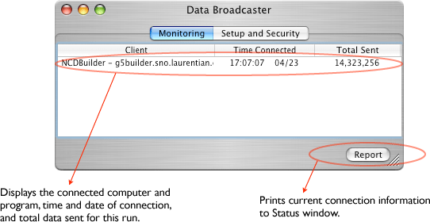
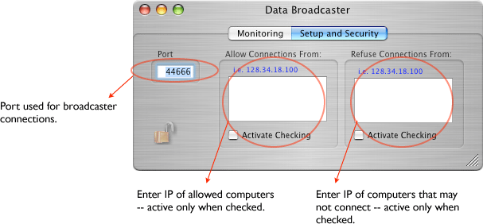

The Broadcaster is a BSD socket object that can stream the raw data stream to remote clients. The data stream is exactly the same as the data put on disk. If a client connects while a run is already in progress, the client will receive the data header, and data parameters, but will lose data up to the time at which the connection is made. The Broadcaster icon in the configuration window looks like this:

The only setup for the dispatcher is to pick a port number for remote clients to connect to. Usually the default port is OK. In addition, one can restrict the connections to the broadcaster to a set of IPs or exclude certain IPs from connecting. Also the broadcaster only allows one connection for each IP.
